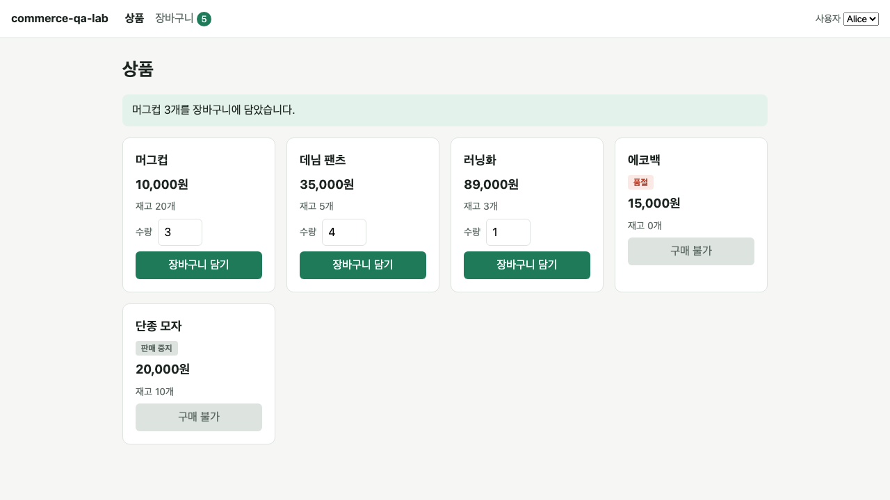
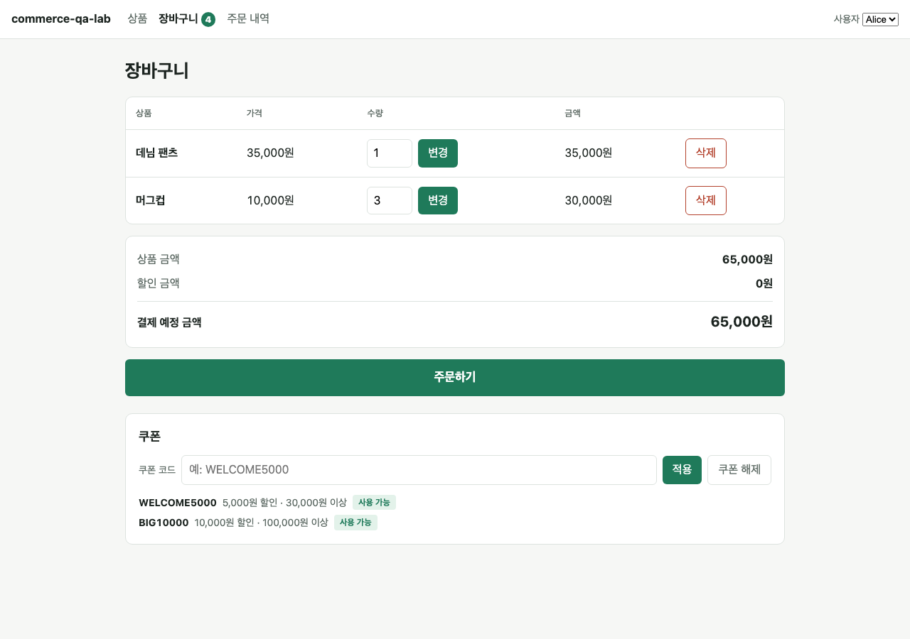

이제 브라우저를 열면 상품이 보이고, 실제로 장바구니에 담고 수량을 바꾸고 뺄 수 있습니다.


규칙은 모두 서버가 최종 판단합니다. 화면에서 아무리 조작해도 서버가 거절하면 담기지 않습니다. 화면만 믿으면 뚫리는 구멍이 생기기 때문입니다.
| 상황 | 결과 |
|---|---|
| 품절 상품(에코백) 담기 | 거절 · 품절된 상품입니다 |
| 판매 중지 상품(단종 모자) 담기 | 거절 · 판매 중지된 상품입니다 |
| 재고 5개인 상품을 6개 담기 | 거절 · 남은 재고와 요청 수량을 함께 알려 줌 |
| 3개 담아 둔 상태에서 3개 더 담기 | 거절 · 합쳐서 6개는 재고를 넘음 |
| 수량을 재고와 똑같이(5개) 맞추기 | 허용 · 경계값 |
| 수량에 0, -1, 1.5, "abc" 입력 | 거절 · 1 이상의 정수만 허용 |
| 장바구니에 담기 | 재고는 줄지 않음 · 재고는 주문할 때만 줄어듦 |
| 다른 손님(Bob)의 장바구니 | 서로 분리됨 · 남의 장바구니는 건드릴 수 없음 |
브라우저 확인은 3번 연속 통과했습니다. 이때 쓴 Playwright는 임시 폴더에서만 사용했고 프로젝트에는 넣지 않았습니다. 정식 자동 검사는 Phase 5~6에서 만듭니다.
둘 다 코드만 보고는 알기 어렵고, 실제로 클릭해 봤기 때문에 드러난 문제입니다.
수량 칸에 0을 넣고 담기를 누르면 브라우저의 기본 입력 검사가 제출을 조용히 막았습니다. 서버까지 가지 않으니 아무 일도 일어나지 않고, 화면에는 직전 에러 메시지가 그대로 남아 손님이 혼란스러운 상태가 됐습니다.
고친 방법: 브라우저 자체 검사를 끄고 서버가 판단하게 했습니다. 규칙의 주인을 한 곳으로 모은 셈입니다.
이후 점검에서 수량 입력칸 이름이 상품마다 같아 테스트가 하나를 고를 수 없다는 문제가 드러나, 지금은 "머그컵 수량"처럼 상품명을 붙였습니다. → 점검 결과
"장바구니 담기" 버튼이 두 줄로 꺾이거나 상품 카드 경계를 넘어갔습니다. 버튼을 수량 입력칸 아래 줄로 내려서 고쳤습니다.
거절당한 뒤 장바구니가 변하지 않았는지까지 확인합니다. "거절됨"만 보고 넘어가면 절반만 검사한 것입니다.
재고와 똑같은 수량(허용)과 하나 많은 수량(거절)을 나란히 확인했습니다. 버그는 이 경계에 숨습니다.
버튼과 입력칸에 사람이 읽는 이름("장바구니 담기", "데님 팬츠 수량")을 붙였습니다. 화면 구조가 바뀌어도 검사가 잘 깨지지 않습니다.
Alice와 Bob의 장바구니가 섞이지 않는지 확인했습니다. 나중에 주문·쿠폰 검사의 전제 조건이 됩니다.